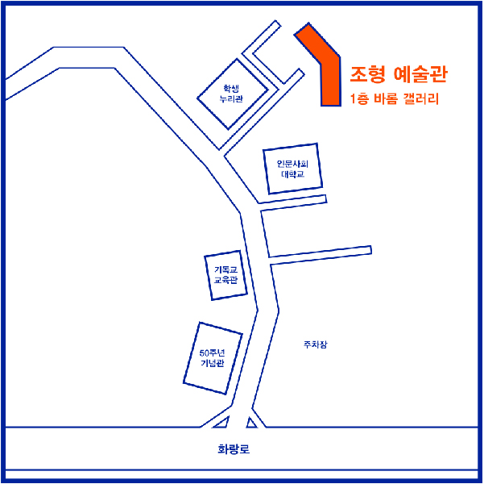

의미만 거창한 타이틀이 아니라 전시 정보 자체를 타이틀로 사용하여 있는 그대로를 드러냈다.
직관적인 타이틀은 복잡한 해석을 요구하지 않으며, 각 참여자의 아이덴티티를 살리는 방법이다.
이는 타이틀에 기대지 않고 작품에 더 집중하겠다는 참여자들의 포부이기도 하다.
이로써 의미만 많고 흔한 전시가 아닌, 2019 서울여대 시각디자인 졸업 전시만의 의미를 갖는다.
36th graduation exhibition, 8 progression teams, 50 participants and teams, 67 works
Sometimes being simple is more effective than being complicated.
It revealed itself as it is, using the wartime information itself as a title, not just a grandiose
title.
Intuitive titles do not require complex interpretations, and are a way to save the identity of each
participant.
This is also the aspiration of participants to focus more on their work rather than relying on the
title.
This is not just a meaningful and common exhibition, but a graduation exhibition of 2019 Seoul Women’s
University’s visual design.
포스터
[36.8.50.67]은 36회, 8개의 졸준위 팀, 50개의 개인과 팀플, 67개의 작업 수를 의미한다.
우리는 남다른 한학기의 졸전의 끝인 ‘여름’이라는 계절을 매력적으로 느껴 여름에
맞춰 시원함을 느낄 수 있는 파라솔과 투명한 pvc를 이용해 실크스크린으로 숫자를,
우리의 졸전을 여름에 녹인다는 의미를 담아내고자 했다.
[36.8.50.67] is 36 times, eight personal team, the 50 individuals and 67
shall mean the number of work. We are extraordinary, the end of the end of the semester
‘summer’ feel glamorous, summer can feel cool to the season that an umbrella and transparent pvc.
Silk screen means summer in numbers, our team wanted to make sure I found it.
교수진
한재준
BX 아이덴티티, 한글디자인
민병걸
출판디자인, 타이포그래피
이재원
인포그래픽, 그래픽디자인
유영재
인터랙티브 영상, 모션디자인, UX/UI
오시는 길

학교버스 |
지하철 |
시내버스 |
주소 |
7호선 태릉입구역, 6호선 화랑대, 석계역에서 셔틀버스 운행
1,6호선 석계역 4번 출구에서 시내버스 이용 6,7호선 태릉입구역 7번 출구에서 학교버스 및 시내버스 이용 6호선 화랑대역 3번 출구에서 하차하여 도보 15분 소요
태릉입구역 및 화랑대역에서 202번, 1225번, 1155번, 1156번, 82A, 82B번 탑승 후
서울여대 육군사관학교 또는 후문에서 하차
서울특별시 노원구 화랑로 621
서울여자대학교 조형예술관
1층 바롬갤러리 / 3층 301호